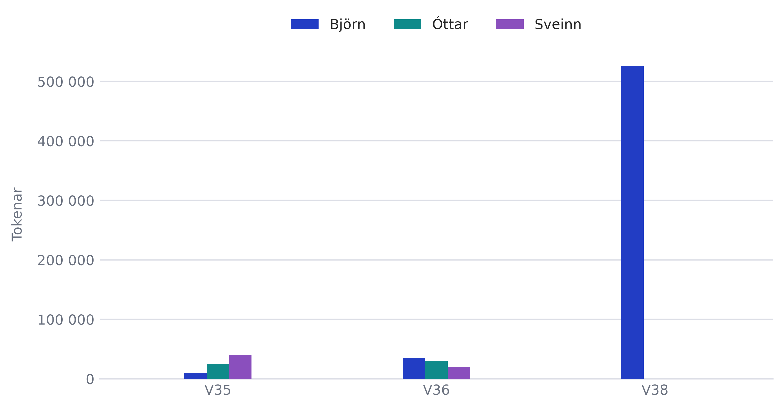

// Tímabilið er sótt í gögnin frekar en skrifað inn, svo textinn eldist ekki.
// Vikurnar eru reiknaðar úr tímastimplum færslnanna, sbr. `isoVika` að ofan.
md`${
timabil.fjoldi === 1
? `Gögnin ná yfir eina viku (${timabil.fyrsta})`
: timabil.fjoldi > 1
? `Gögnin ná yfir ${timabil.fjoldi} vikur, frá ${timabil.fyrsta} til ${timabil.sidasta}`
: "Ekki tókst að lesa dagsetningar úr gögnunum"
}, og teymið hefur alls notað **${fInt(alls)} tokena**.`Tokennotkun
Þessi síða heldur utan um hversu marga tokena hvert okkar hefur notað í gervigreindarverkfærum við vinnu á verkefninu. Token er sá búti sem mállíkan les og skrifar í — hvorki orð né stafur, heldur eitthvað þar á milli — og talan er því gróf mæling á umfangi, ekki á gæðum eða vinnuframlagi.
Tölurnar koma úr data/tokens/tokens.csv, sameiginlegri skrá teymisins. Ekkert gildi er slegið inn í þessa síðu: teljararnir eru summa allra færslna hvers og eins og uppfærast sjálfkrafa þegar skráin er uppfærð.
LIDID = [
{nafn: "Björn", slod: "bjorn.html"},
{nafn: "Óttar", slod: "ottar.html"},
{nafn: "Sveinn", slod: "sveinn.html"}
]
// ── Lestur skrárinnar ────────────────────────────────────────────────────────
radir = {
const reitur = document.getElementById("tk-gogn");
if (!reitur) {
throw new Error(
"Gagnareiturinn `tk-gogn` fannst ekki. Hann verður til efst á þessari " +
"síðu, þar sem `data/tokens/tokens.csv` er lesin inn í skjalið."
);
}
// `` getur fylgt skrám sem eru vistaðar sem UTF-8 með BOM; d3 skilar
// þá fyrsta dálkanafninu með ósýnilegum staf fremst.
const texti = reitur.textContent.replace(/^/, "").trim();
if (!texti) {
throw new Error("`data/tokens/tokens.csv` er tóm.");
}
return d3.csvParse(texti);
}
dalkar = radir.columns
// ── Dálkarnir ────────────────────────────────────────────────────────────────
// `/tokens-data` á CSV-ið og ræður endanlegum dálkanöfnum. Þessi síða er unnin
// samhliða því skrefi, svo hér er tekið við þeim rithætti sem til greina kemur
// frekar en að síðan falli á einum stafsetningarmun. Listarnir eru þeir sömu og
// persónusíðurnar lesa, svo síðurnar séu sammála um skrána.
//
// Vikudálkur er ekki í skránni og hér er ekki leitað að honum: ein lína er ein
// session með tímastimpli, ekki vikusamtala. Vikan er reiknuð úr stimplinum í
// kaflanum „Vikur“ hér að neðan.
function finnaDalk(dalkar, kostir, lysing) {
const fyrir = new Map(dalkar.map(d => [d.trim().toLowerCase(), d]));
for (const kostur of kostir) {
if (fyrir.has(kostur)) return fyrir.get(kostur);
}
throw new Error(
`Fann engan ${lysing}-dálk í tokens.csv. Leitað var að: ${kostir.join(", ")}. ` +
`Dálkar skrárinnar eru: ${dalkar.join(", ")}.`
);
}
// Sé samtöludálkur til staðar er hann notaður einn; annars eru allir
// token-dálkar lagðir saman (t.d. inntak + úttak). Þessi röð kemur í veg fyrir
// tvítalningu ef skráin geymir bæði sundurliðun og samtölu.
function finnaTokenDalka(dalkar) {
const fyrir = new Map(dalkar.map(d => [d.trim().toLowerCase(), d]));
for (const samtala of ["tokens", "token", "tokens_alls", "alls", "samtals"]) {
if (fyrir.has(samtala)) return [fyrir.get(samtala)];
}
const hlutar = dalkar.filter(d => d.toLowerCase().includes("token"));
if (hlutar.length) return hlutar;
throw new Error(
`Fann enga token-dálka í tokens.csv. Dálkar skrárinnar eru: ${dalkar.join(", ")}.`
);
}
d_nafn = finnaDalk(dalkar, ["nafn", "name", "liðsmaður", "lidsmadur"], "nafn")
d_stimpill = finnaDalk(
dalkar,
["tímastimpill", "timastimpill", "timestamp", "dagsetning", "date", "tími", "timi"],
"tímastimpils"
)
d_tokens = finnaTokenDalka(dalkar)
// ── Umbreytingar ─────────────────────────────────────────────────────────────
// Samanburðarlykill fyrir nöfn: lágstafir án broddstafa. „Björn“, „björn“ og
// „Bjorn“ eiga öll að lenda á sömu manneskju. Skrár sem fara í gegnum verkfæri
// án UTF-8 tapa gjarnan broddunum, og þá á síðan ekki að telja núll á mann sem
// hefur augljóslega skráð notkun.
lykill = nafn =>
(nafn ?? "").trim().normalize("NFD").replace(/\p{M}/gu, "").toLowerCase()
// Les tölu úr CSV-reit og hunsar þúsundaskil (bil, punkt eða kommu).
semHeiltala = gildi => {
const hreint = String(gildi ?? "").replace(/[^\d-]/g, "");
const tala = parseInt(hreint, 10);
return Number.isFinite(tala) ? tala : 0;
}
// ── Vikur ────────────────────────────────────────────────────────────────────
// Skráin geymir tímastimpil á hverja færslu, ekki vikunúmer (sjá
// `data/tokens/README.md`). Vikan er því reiknuð hér, svo lesa megi vikur — og
// hvaða önnur tímabil sem er — út úr sömu gögnunum án þess að þau séu skráð
// oftar en einu sinni.
// Aðeins dagsetningarhlutinn ræður vikunni, svo hann er lesinn beint úr
// strengnum í stað `new Date(texti)`. Ástæðan er að ISO-strengur með klukkan en
// án tímabeltis er lesinn sem staðartími, en dagsetning ein og sér sem UTC. Sami
// dagur gæti þá lent í sitt hvorri vikunni eftir því hvort klukkan fylgdi með.
lesaDagsetningu = gildi => {
const hlutar = String(gildi ?? "").trim().match(/^(\d{4})-(\d{1,2})-(\d{1,2})/);
if (!hlutar) return null;
const [, ar, manudur, dagur] = hlutar.map(Number);
// Miðnætti í UTC: reikningurinn hér að neðan telur í heilum sólarhringum og má
// ekki lenda í sumartímaskiptum.
const dagsetning = new Date(Date.UTC(ar, manudur - 1, dagur));
// `Date.UTC` veltir ógildum gildum yfir í næsta mánuð í stað þess að hafna
// þeim — 2026-13-45 yrði 2027-02-14. Þá lenti færslan í rangri viku án þess
// að nokkur sæi það, svo hér er gætt að því að dagsetningin lesist eins til
// baka. Persónusíðurnar hafna sömu færslu með villu frá `fromisoformat`.
const gild =
dagsetning.getUTCFullYear() === ar &&
dagsetning.getUTCMonth() === manudur - 1 &&
dagsetning.getUTCDate() === dagur;
return gild ? dagsetning : null;
}
// ISO 8601: vikan hefst á mánudegi og vika 1 er sú sem inniheldur fyrsta
// fimmtudag ársins. Vikuárið er því ekki alltaf almanaksárið — 31. desember
// getur tilheyrt viku 1 næsta árs, og þess vegna fylgir árið vikumerkinu.
// Ritvenjan `ÁÁÁÁ-Wnn` er sú sama og persónusíðurnar nota, svo lesandi sem fer
// á milli síðnanna sjái sama vikuheitið á báðum stöðum.
// Reiknað í höndunum af því að hvorki staðalbúnaður Observable né d3 kunna
// ISO-vikunúmer, og luxon er ekki á síðunni.
isoVika = dagsetning => {
// Fimmtudagur sömu viku ræður bæði vikuárinu og vikunúmerinu.
const fimmtudagur = new Date(dagsetning.getTime());
const vikudagur = (fimmtudagur.getUTCDay() + 6) % 7; // mánudagur = 0
fimmtudagur.setUTCDate(fimmtudagur.getUTCDate() - vikudagur + 3);
const ar = fimmtudagur.getUTCFullYear();
const vika1 = new Date(Date.UTC(ar, 0, 4)); // 4. janúar er alltaf í viku 1
const skekkja = (vika1.getUTCDay() + 6) % 7;
vika1.setUTCDate(vika1.getUTCDate() - skekkja + 3);
const vika = 1 + Math.round((fimmtudagur - vika1) / (7 * 24 * 60 * 60 * 1000));
return {ar, vika, merki: `${ar}-W${String(vika).padStart(2, "0")}`};
}
// Röðunarlykill sem raðar viku 9 á undan viku 10, líka án núllfyllingar.
vikuRod = (a, b) => {
const tolur = v => (String(v).match(/\d+/g) ?? []).map(Number);
const [ta, tb] = [tolur(a), tolur(b)];
for (let i = 0; i < Math.max(ta.length, tb.length); i++) {
const munur = (ta[i] ?? -1) - (tb[i] ?? -1);
if (munur) return munur;
}
return String(a).localeCompare(String(b), "is");
}
// ── Samlagning ───────────────────────────────────────────────────────────────
uppgjor = {
const perMann = new Map(LIDID.map(m => [lykill(m.nafn), 0]));
const vikur = new Set();
for (const rad of radir) {
const nafn = lykill(rad[d_nafn]);
if (!perMann.has(nafn)) continue;
perMann.set(
nafn,
perMann.get(nafn) + d3.sum(d_tokens, d => semHeiltala(rad[d]))
);
const dagsetning = lesaDagsetningu(rad[d_stimpill]);
if (dagsetning) vikur.add(isoVika(dagsetning).merki);
}
// Finnist enginn liðsmaður er nafnadálkurinn ekki sá sem við héldum — það er
// villa í skránni eða í lestrinum, ekki gild niðurstaða. Vanti hins vegar
// einn af þremur er núll rétt svar: sá hefur ekki skráð notkun enn.
if (![...perMann.values()].some(t => t > 0)) {
throw new Error(
"Engar færslur fyrir Björn, Óttar eða Svein í tokens.csv. Athugaðu " +
`ritháttinn á ${d_nafn}-dálknum.`
);
}
const alls = d3.sum(perMann.values());
const rodadar = [...vikur].sort(vikuRod);
return {
alls,
teljarar: LIDID.map(m => ({
...m,
tokens: perMann.get(lykill(m.nafn)),
hlutfall: alls ? (100 * perMann.get(lykill(m.nafn))) / alls : 0
})),
timabil: {
fyrsta: rodadar[0] ?? "",
sidasta: rodadar[rodadar.length - 1] ?? "",
fjoldi: rodadar.length
}
};
}
teljarar = uppgjor.teljarar
alls = uppgjor.alls
timabil = uppgjor.timabil
// ── Snið ─────────────────────────────────────────────────────────────────────
// Íslensk þúsundaskil með fastabili og tugakomma, eins og á öðrum síðum vefsins.
isFmt = d3.formatLocale({decimal: ",", thousands: " ", grouping: [3], currency: ["", ""]})
fInt = isFmt.format(",d")
fPct = x => isFmt.format(",.1f")(x) + " %"Teljarar
SNUNINGAR = 2
hoegur = window.matchMedia("(prefers-reduced-motion: reduce)").matches
// ── Ein stafarúlla ───────────────────────────────────────────────────────────
function rulla(stafur, rod) {
// Rúllan geymir 0–9 endurtekið og er færð upp þar til rétti stafurinn stendur
// í glugganum. Af því að *allar* rúllur geyma alla tíu stafina fá þær sömu
// breidd af sjálfu sér — engin þörf á `tabular-nums`, sem er undir hælinn
// lagt hvort letrið styður.
const gluggi = document.createElement("span");
gluggi.className = "tk-reel";
const bord = document.createElement("span");
bord.className = "tk-strip";
for (let hringur = 0; hringur <= SNUNINGAR; hringur++) {
for (let t = 0; t <= 9; t++) {
const reitur = document.createElement("span");
reitur.className = "tk-digit";
reitur.textContent = String(t);
bord.appendChild(reitur);
}
}
gluggi.appendChild(bord);
const lokastada = SNUNINGAR * 10 + Number(stafur);
if (hoegur) {
// Lesandi sem hefur beðið um minni hreyfingu fær töluna strax og kyrra.
bord.style.transform = `translateY(-${lokastada}em)`;
gluggi.rulla = () => {};
} else {
// Vinstri stafirnir stöðvast fyrst og þeir hægri síðast, svo talan les sig
// eins og hún sé að telja sig upp í rétt gildi.
bord.style.transform = "translateY(0)";
gluggi.rulla = () => {
bord.style.transition =
`transform ${900 + rod * 140}ms cubic-bezier(0.22, 1, 0.36, 1)`;
bord.style.transform = `translateY(-${lokastada}em)`;
};
}
return gluggi;
}
// ── Eitt spjald ──────────────────────────────────────────────────────────────
function spjald(d) {
const stafir = fInt(d.tokens);
const kort = document.createElement("a");
kort.className = "tk-card";
kort.href = d.slod;
const nafn = document.createElement("span");
nafn.className = "tk-name";
nafn.textContent = d.nafn;
kort.appendChild(nafn);
const talan = document.createElement("span");
talan.className = "tk-value";
// Rúllurnar eru sjónræn framsetning; hjálpartæki lesa töluna úr `tk-sr`, sem
// er falin sjónrænt en stendur í textanum. Þannig verður aðgengilegt heiti
// hlekksins „Björn 942 400 tokenar 41,0 % af heild“ án þess að stafarúllurnar
// séu lesnar upp staf fyrir staf.
const rullur = document.createElement("span");
rullur.className = "tk-odo";
rullur.setAttribute("aria-hidden", "true");
let rod = 0;
for (const stafur of stafir) {
if (stafur >= "0" && stafur <= "9") {
rullur.appendChild(rulla(stafur, rod));
rod += 1;
} else {
const skil = document.createElement("span");
skil.className = "tk-sep";
rullur.appendChild(skil);
}
}
talan.appendChild(rullur);
const lesin = document.createElement("span");
lesin.className = "tk-sr";
lesin.textContent = stafir;
talan.appendChild(lesin);
kort.appendChild(talan);
const eining = document.createElement("span");
eining.className = "tk-unit";
eining.textContent = "tokenar";
kort.appendChild(eining);
const hlutfall = document.createElement("span");
hlutfall.className = "tk-share";
hlutfall.textContent = `${fPct(d.hlutfall)} af heild`;
kort.appendChild(hlutfall);
return kort;
}
// ── Tölurnar lagaðar að breidd spjaldanna ────────────────────────────────────
// Hversu breið talan verður fer bæði eftir fjölda tölustafa og eftir letrinu,
// svo hvorugt er hægt að giska á í stílskránni. Hér er breiddin mæld.
//
// Öll þrjú spjöldin fá sömu leturstærð — þá sem þrengsta talan þolir. Ef hver
// teljari væri stækkaður í sitt eigið hámark yrði sá sem hefur flesta stafi
// minnstur, og röðin læsi eins og tölurnar væru misjafnlega mikilvægar.
HAMARK = 2.4 // rem — stærðin þegar nóg pláss er
function passa(rod) {
const spjold = [...rod.querySelectorAll(".tk-card")];
const rullur = spjold.map(k => k.querySelector(".tk-odo"));
let sidasta_breidd = -1;
const stilla = () => {
// Aðeins breidd raðarinnar skiptir máli: hún ræður bæði dálkafjöldanum og
// breidd hvers spjalds. Án þessarar varnar myndi hæðarbreytingin, sem
// leturstærðin sjálf veldur, ræsa vaktarann aftur.
const breidd_radar = rod.clientWidth;
if (breidd_radar === sidasta_breidd) return;
sidasta_breidd = breidd_radar;
// Mælt við fulla stærð, svo hlutföllin séu þau sömu í hvert sinn — annars
// myndi hver keyrsla mæla útkomu þeirrar síðustu og talan skreppa saman.
rullur.forEach(r => (r.style.fontSize = `${HAMARK}rem`));
let hlutfall = 1;
spjold.forEach((kort, i) => {
const stilar = getComputedStyle(kort);
const laust =
kort.clientWidth -
parseFloat(stilar.paddingLeft) -
parseFloat(stilar.paddingRight);
// Breidd talnanna er lögð saman úr rúllunum sjálfum. `.tk-odo` er
// flex-hlutur sem teygist yfir allt spjaldið, svo breidd hans segir
// ekkert um hvað talan tekur mikið pláss.
const breidd = [...rullur[i].children].reduce((s, b) => s + b.offsetWidth, 0);
if (breidd > 0) hlutfall = Math.min(hlutfall, laust / breidd);
});
const staerd = HAMARK * Math.min(1, hlutfall);
rullur.forEach(r => (r.style.fontSize = `${staerd}rem`));
};
if ("ResizeObserver" in window) {
// Vaktarinn keyrir strax við `observe`, svo hann sér bæði um fyrstu
// stillinguna — röðin er ekki komin í skjalið þegar spjöldin verða til —
// og um það þegar glugginn breytist.
new ResizeObserver(stilla).observe(rod);
} else {
requestAnimationFrame(stilla);
}
}
// ── Röðin af spjöldum ────────────────────────────────────────────────────────
kpi = {
const rod = document.createElement("div");
rod.className = "tk-row";
teljarar.map(spjald).forEach(k => rod.appendChild(k));
passa(rod);
// Rúllurnar fara ekki af stað fyrr en spjöldin sjást. Sé teljarinn neðan við
// brún gluggans er hreyfingin annars búin áður en lesandinn kemur að honum.
const raesa = () => rod.querySelectorAll(".tk-reel").forEach(r => r.rulla());
if (hoegur || !("IntersectionObserver" in window)) {
raesa();
} else {
const vaktari = new IntersectionObserver((faerslur, sjalfur) => {
if (faerslur.some(f => f.isIntersecting)) {
raesa();
sjalfur.disconnect();
}
}, {threshold: 0.4});
vaktari.observe(rod);
}
return rod;
}Smelltu á spjald til að sjá vikulega sundurliðun: Björn, Óttar og Sveinn.
Samanburður eftir vikum
Teljararnir segja hversu mikið hver hefur notað alls. Þeir segja ekki hvenær — og það er einmitt spurningin þegar þrír vinna saman: vinnur teymið jafnt og þétt, eða koma törnin á sitt hvorum tímanum hjá hverjum?

Súlurnar standa hlið við hlið en ekki staflaðar: stafli svarar spurningunni „hvað notaði teymið alls“, sem teljararnir að ofan svara nú þegar. Hér er spurningin samanburður milli manna, og þá þarf hver súla að hefjast á sama grunni. Liðsmaður sem á enga færslu tiltekna viku fær núll en ekki gat, svo vikurnar standist á.
Tölurnar á bak við teljarana
// Sömu tölur og teljararnir sýna, á formi sem má lesa nákvæmlega, afrita og
// bera saman. Rúllurnar eru sjónræn framsetning; taflan er gagnasafnið.
html`<table class="table table-sm tk-tafla">
<caption>Heildarfjöldi tokena á mann, sömu tölur og teljararnir sýna.</caption>
<thead>
<tr>
<th scope="col">Liðsmaður</th>
<th scope="col" class="tk-num">Tokenar</th>
<th scope="col" class="tk-num">Hlutfall</th>
</tr>
</thead>
<tbody>
${teljarar.map(t => html`<tr>
<th scope="row" class="tk-radhaus"><a href="${t.slod}">${t.nafn}</a></th>
<td class="tk-num">${fInt(t.tokens)}</td>
<td class="tk-num">${fPct(t.hlutfall)}</td>
</tr>`)}
<tr class="tk-samtala">
<th scope="row" class="tk-radhaus">Alls</th>
<td class="tk-num">${fInt(alls)}</td>
<td class="tk-num">${fPct(alls ? 100 : 0)}</td>
</tr>
</tbody>
</table>`
AthugasemdUm gögnin
data/tokens/tokens.csv er sameiginleg skrá fyrir teymið og verður til í /tokens-data skrefinu (sjá issue #42) — hún er ekki skrifuð af þessari síðu. Talan fyrir hvern liðsmann er summa allra færslna hans í skránni, óháð viku. Sé skráin með sundurliðun í inntaks- og úttakstokena eru báðir dálkar taldir með, en sé samtöludálkur til staðar er hann notaður einn og sér svo ekkert tvítelst.
Skráin er lesin inn í HTML-skjalið við render, svo síðan sækir enga skrá í vafra lesandans. Ástæðan er að data/ liggur utan Quarto-verkefnisins, sem er mappan site/, og skilar sér því ekki inn í docs/ við byggingu.
Nánari lýsing á dálkunum er í data/tokens/README.md.